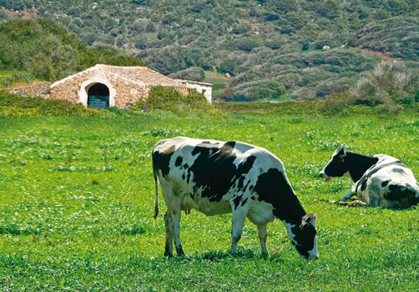
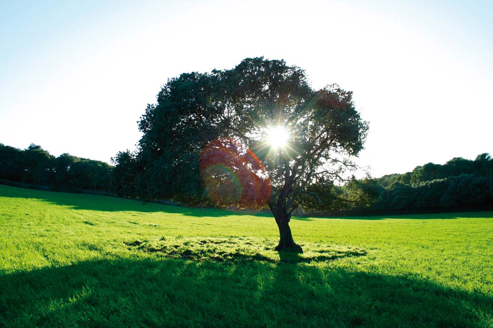
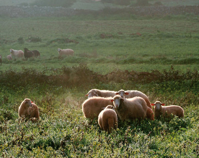
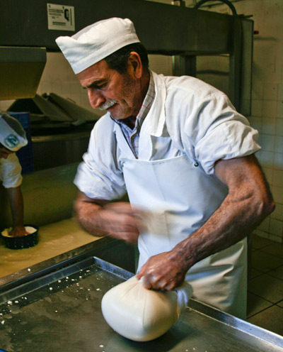

СЕЛЬСКОЕ ХОЗЯЙСТВО И ЖИВОТНОВОДСТВО. Пейзаж рукотворный… и манящий
Человека, впервые любующегося сельской Меноркой, впечатляют бесконечные, невысокие каменные стены, называемые парет сека (pared seca), сложенные без закрепляющего раствора, с вкрапленными в них деревянными воротами. Такое простое изобретение из доступного в изобилии стройматериала (камня) существует для размежевания земельных участков по всему острову и выпаса скота.
С доисторических времен сельское хозяйство Менорки специализировалось на животноводстве. Древнегреческие мореплаватели назвали остров «Meloussa» –земля рогатого скота. В эпоху средневековья, а также во время британского владычества XVIII века доминировало разведение овец, шерсть которых очень ценилась на европейских рынках.
В XX веке овцеводство сменилось разведением коров, что продолжается и сегодня. По-прежнему особое положение занимает сыр, изготовляемый вручную и без использования пресс-форм. Простая, но эффективная технология, при которой крестьянин заворачивает молочную сыворотку в кусок ткани (fogasser) и отжимает вручную, в результате чего сыр и приобретает характерную форму квадрата со скругленными углами.
Производство сыра остается для Менорки ключевым, кроме того растет и производство мяса – говядины, баранины и свинины. Кстати, со свининой в большой степени связано поддержание гастрономических традиций и изготовление традиционные видов колбасы: собрасада (sobrasada), камот (camot/cuixot) или ботифарро (botifarró).
Близость моря и преобладающий северный ветер, отличающие климат Менорки, придают особый вкус ее продуктам и урожаям, а, добавив к этому рыбу и морепродукты из кристально чистых морских вод, мы получим прекрасный материал для изысканной меноркинской кухни.
Общепризнанно, что труд местного народа по освоению, улучшению и в особенности по сохранению своей земли и ее ландшафта не остался незамеченным и увенчался декларацией Менорки биосферным заповедником ЮНЕСКО в 1993 году.
Сегодняшнее сельское хозяйство, безусловно, смотрит в будущее. Вновь возвращаются забытые промыслы – производство вина, оливкового масла, меда, но вместе с тем появляются и новые. Все они отмечены переходом к принципам экологического земледелия. Остается лишь наладить коммерцию и маркетинг, что поможет местным продуктам быть оцененными по достоинству.